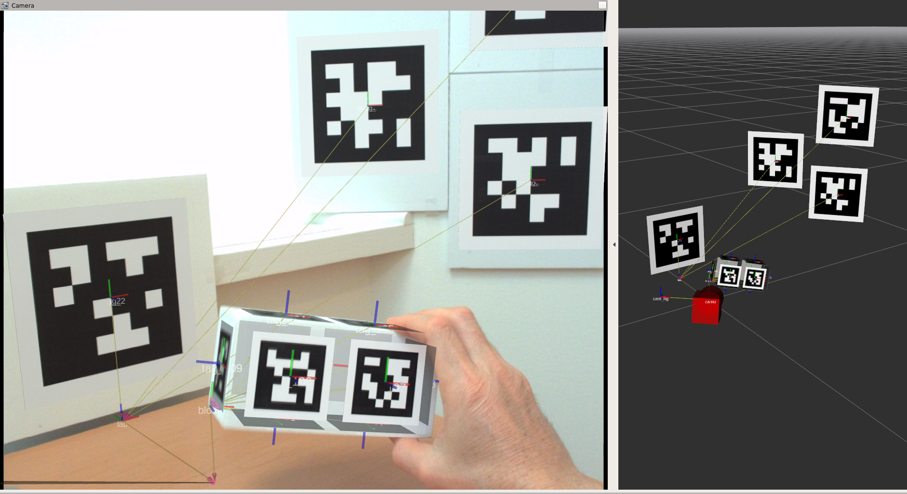

Visualization
How to render the tags in rviz
The tagslam_viz package has python code to generate urdf models
for the tags. The urdf is generated for all tags listed in the
poses.yaml file that is produced when you run TagSLAM. Here is how to
generate the urdf, and load it into the ROS parameter space:
roslaunch tagslam_viz visualize_tags.launch tag_id_file:=$HOME/.ros/poses.yaml
Now in rviz, you add a “RobotModel”, and change the “Robot Description” from “robot_description” to “tags”. All that is missing now is a transform from tag to world frame. So run TagSLAM again, and you should see the tags rendered.
How to render cameras in rviz
The tagslam_viz also has code to generate a simple camera urdf
model for each camera in cameras.yaml. Run it like this:
roslaunch tagslam_viz visualize_cameras.launch cameras_file:=path_to_your_cameras.yaml
Just like for the tags, now add a “RobotModel” in rviz, and change the “Robot Description” from “robot_description” to “cameras”. The cameras should display once valid transforms are available.
How to get the rviz “Camera” feature to work
For the “Camera” feature in rviz to work properly you need:
- an undistorted camera image.
- a valid and synchronized “camera_info” topic in the bag
- a valid transform from camera to map
- a matching “frame_id” for transform, camera_info, and image
Only if all these requirements are fulfilled will rviz overlay the camera image with the 3d world.
Massage the bag
To start, the topics in your bag should look like this:
topics: /camera/camera_info 1724 msgs : sensor_msgs/CameraInfo
/camera/compressed 1724 msgs : sensor_msgs/CompressedImage
You can massage the bag topic scheme by using the topic renamer tool:
rosrun rosbag topic_renamer.py <in topic> <in bag> <out topic> <out bag>
If you don’t have the camera info in the bag, add it like so:
rosrun tagslam add_camera_info.py --out_bag output.bag --caminfo_file camerainfo.yaml --caminfo_topic /camera/camera_info --image_topic /camera/compressed input.bag
Verify that your camera_info and image messages have a frame_id of “cam0” in the header. If not, change the frame_id like this:
rosrun bag_tools change_frame_id.py -o OUTPUT_BAGFILE -i INPUT_BAGFILE -f cam0 -t /camera/camera_info /camera/compressed
Run rviz and necessary modules
First, run a module to decompress the image:
rosrun image_transport republish compressed in:=/camera out:=/camera/image_raw
Now you need to run the image_proc module in the namespace of your camera to get a rectified (undistorted) image. This is very important. If you use the non-rectified image, the projections done by rviz will not be lining up with the camera image.
ROS_NAMESPACE=camera rosrun image_proc image_proc
Next, create a Camera window in rviz, subscribing to the topic “/camera/image_rect_color”. Then run a detector node to decode the images, run tagslam to produce valid cam0-to-map transforms, and play the bag. The Camera in rviz should start displaying images now.
To get the tags to visualize, first run tagslam for a while so you have all the valid tag poses. Then dump them into a file:
rosservice call /tagslam/dump
and load all required tags into the parameter space:
roslaunch tagslam_viz visualize_tags.launch tag_id_file:=$HOME/.ros/poses.yaml
Likewise all cameras:
roslaunch tagslam_viz visualize_tags.launch cameras_file:=full_path_to_cameras.yaml
If the camera calibration is correct, the resulting Camera display in rviz should have only small projection errors, as in the image below.
